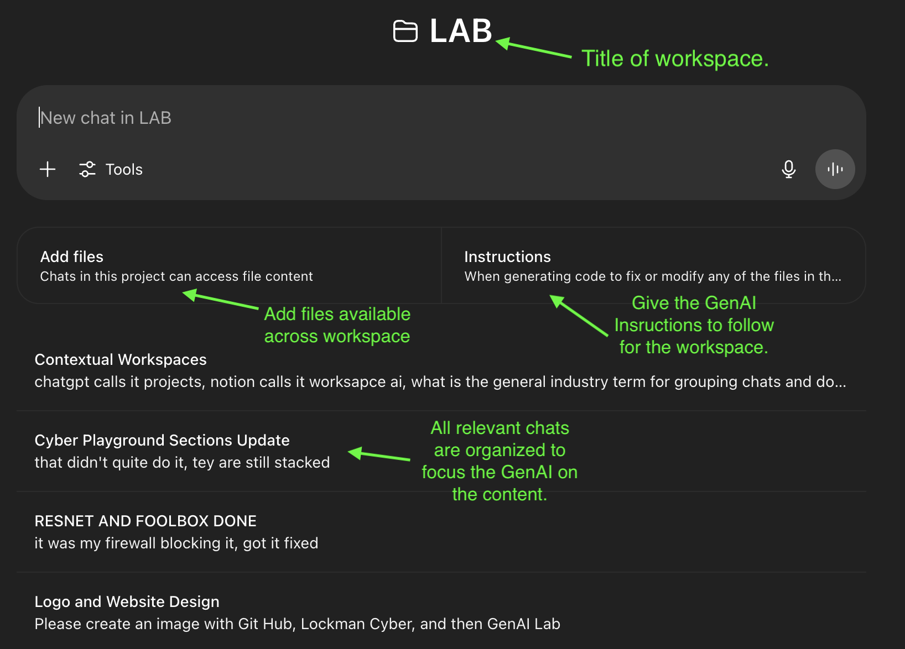

📁 What Is a Contextual Workspace?
Overview
A Contextual Workspace is a digital environment where users and AI systems can collaboratively work on a focused topic, task, or goal by grouping together chats, documents, code, files, and memory into a unified, persistent context. This allows for continuity, efficiency, and deeper reasoning across sessions.
Key Characteristics
Persistent Context: Remembers previous interactions, decisions, and documents, so users don’t need to repeat themselves.
Multimodal Support: Can include text, code, images, PDFs, spreadsheets, or other relevant data types.
Task-Oriented Grouping: Each workspace is centered around a specific topic or project (e.g., "AI Lab," "Resume Builder," or "Vacation Planning").
Collaborative Intelligence: Combines human direction with AI-generated insights to accelerate complex workflows.
Cross-Session Memory: Allows continuity even if users leave and return later—ideal for long-term projects.
Real-World Examples
| Platform | Their Term | Notes |
|---|---|---|
| ChatGPT | Projects | Persistent AI chats + files + tools in one project |
| Notion AI | Workspace AI | AI embedded into structured productivity docs |
| Claude.ai | Files + Long Context | Upload docs, maintain understanding over sessions |
| Microsoft Copilot | Document Threads | Context within Office apps like Word or Excel |
Use Cases
🧪 Research & Development (e.g., AI/ML experiments, threat modeling)
💼 Professional Workflows (e.g., presentations, documentation, planning)
🧠 Learning & Education (e.g., tutorials, study plans, code review)
✈️ Personal Projects (e.g., trip planning, resume building, journaling)
Benefits
✅ Saves time by eliminating repetitive re-explanation
✅ Improves accuracy through continuity of context
✅ Enhances creativity with a centralized space for experimentation
✅ Enables seamless collaboration across formats and tools
Summary
A Contextual Workspace is your intelligent, persistent digital environment—powered by AI—that organizes everything you need to get complex work done in one place.